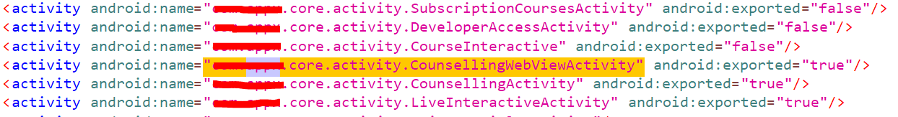
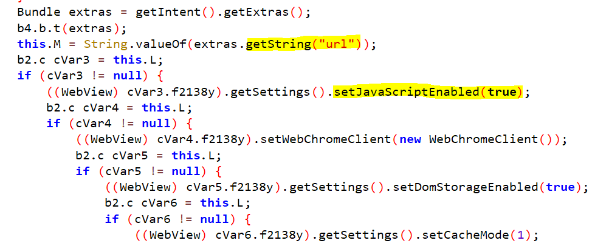
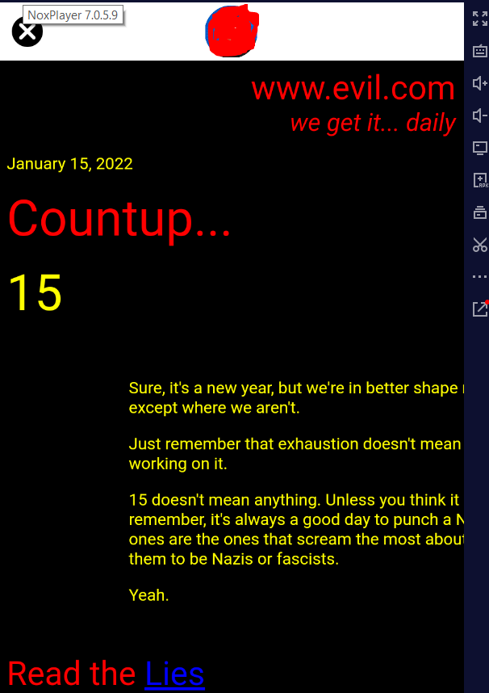
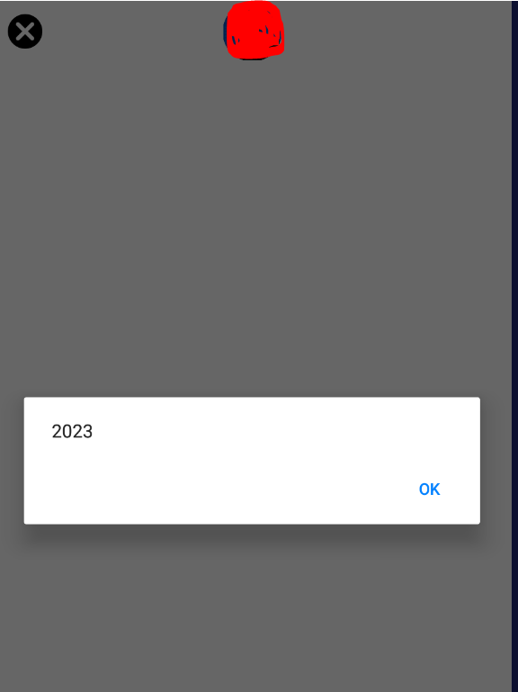

WebView
Webview Activity Exploit
Date: 09/11/23A WebView activity is a component in mobile development that embeds a web browser within the application. It allows developers to display web content seamlessly without launching an external browser. WebView activities are commonly used to integrate web-based features into native mobile apps, enabling the incorporation of dynamic web content, online forms, and interactive elements. This approach provides a smoother user experience by combining the functionalities of native and web applications. While WebView activities enhance app versatility, developers must implement robust security measures to mitigate potential vulnerabilities associated with web content rendering within the app.
I downloaded an educational APK from the Play Store, I utilized JADX GUI to decompile the APK. Upon inspecting the AndroidManifest.xml file, I discovered that the WebViewActivity was marked as exported=true. This marks the first checkbox for potential exploitation, as to exploit any activity in an Android APK, it must be exported="true". This finding raises security concerns, emphasizing the importance of reviewing and securing exported activities to prevent unauthorized access and potential exploitation.

Following that, I opened the WebViewActivity to review its code and functionality. This step is crucial in understanding the implementation details and potential security vulnerabilities that may exist within the WebViewActivity.
Upon reviewing the code of the WebView activity, I identified potential vulnerabilities, specifically an open redirect and a risk of Cross-Site Scripting (XSS) exploitation, given that JavaScript was enabled. An open redirect vulnerability could allow malicious redirection to external sites, posing a security risk. Additionally, the presence of JavaScript without proper input validation might expose the application to XSS attacks, leading to unauthorized script execution.

Given that the intent is searching for a "url" parameter, the payload must be passed using the key "url."
#ADB Command for Open redirect
>adb shell am start -n com.package.name/name.activ.core.activity.CounsellingWebViewActivity --es url "https://evil.com"
#ADB Command for XXS
adb shell am start -n com.package.name/name.activ.core.activity.CounsellingWebViewActivity --es url "javascript:alert\(2023\)"
Hence, I executed an ADB command using the key "url" and the value "url and javascript" to validate the existence of the bug.
